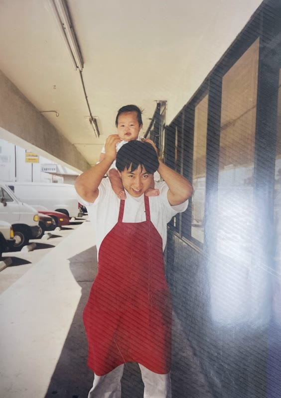
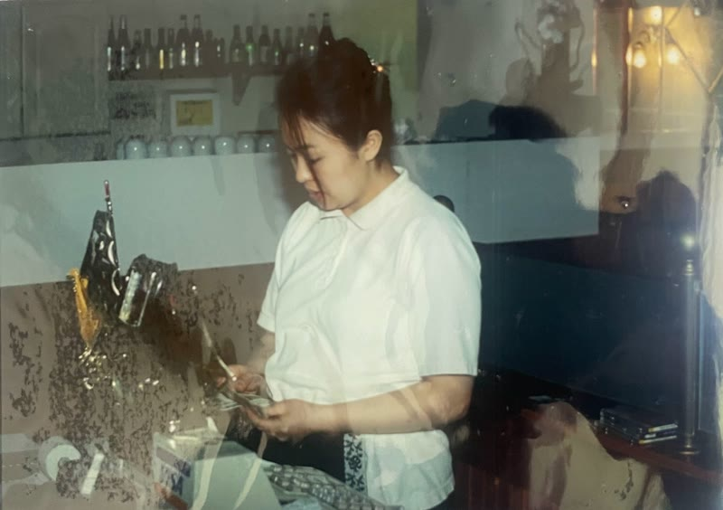
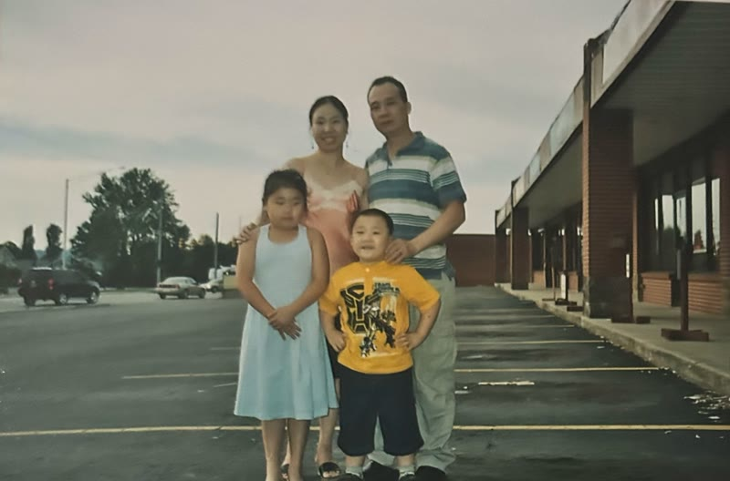
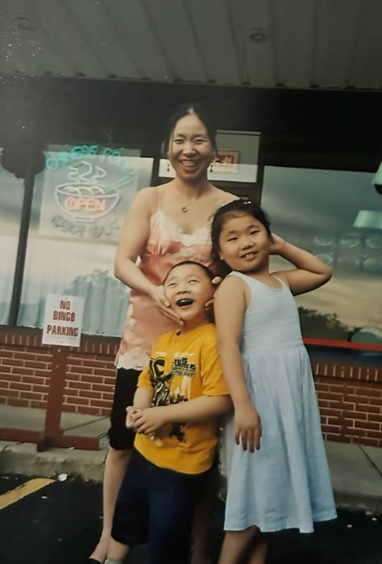

Trusted By:
→Clients’ Stories
Our Story→
We are a digital studio that helps small businesses share their stories online. We first started to help our parents’ businesses get a jump start through online media and marketing, and it worked. We want to do the same for you.



